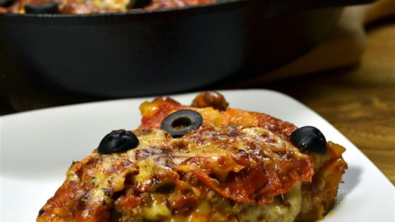

My Favorite Recipe
Chicago-Style Pan Pizza

Ingredients
- 1 (1 pound) loaf frozen bread dough, thawed
- 1 pound bulk Italian sausage
- 2 cups shredded mozzarella cheese
- 8 ounces sliced fresh mushrooms
- 1 small onion, chopped
- 2 teaspoons olive oil
- 1 (28 ounce) can diced tomatoes, drained
- 3/4 teaspoon dried oregano
- 1/2 teaspoon salt
- 1/4 teaspoon fennel seed
- 1/4 teaspoon garlic powder
- 1/2 cup freshly grated Parmesan cheese
Directions
- Preheat the oven to 350 degrees F (175 degrees C). Press the dough into the bottom and up the sides of a greased 9x13 inch baking dish.
- Crumble the sausage into a large skillet over medium-high heat. Cook and stir until evenly browned. Remove the sausage with a slotted spoon, and sprinkle over the dough crust.
- Sprinkle mozzarella cheese evenly over the sausage.
- Add mushrooms and onion to the skillet; cook and stir until the onion is tender. Stir in the tomatoes, oregano, salt, fennel seed and garlic powder.
- Spoon over the mozzarella cheese. Sprinkle Parmesan cheese over the top.
- Bake for 25 to 35 minutes in the preheated oven, or until crust is golden brown.